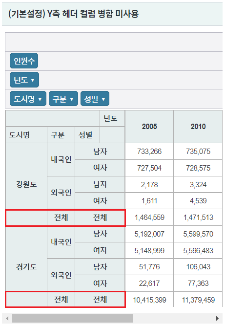
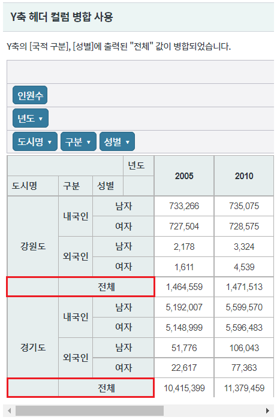
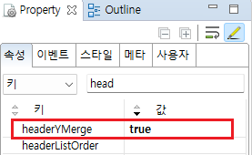
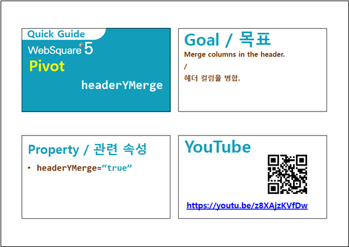

Pivot의 Y축 헤더 컬럼 병합 예제입니다. 속성 "headerYMerge"의 설정을 통해 Y축에 출력된 헤더의 값이 동일한 경우 병합할 수 있습니다.
Y축 헤더 컬럼 병합 미사용
Y축 헤더 컬럼 병합 사용
영역 [(기본설정) Y축 헤더 컬럼 병합 미사용]의 Pivot을 확인합니다.
기능 비교를 위해 Y축 헤더 [구분], [성별]의 값이 "전체"인 행을 확인합니다.
컬럼이 병합되지 않고 나뉘어 동일한 값이 출력됩니다.
[브라우저(Chrome) 실행 예시]

영역 [(기본설정) Y축 헤더 컬럼 병합 사용]의 Pivot을 확인합니다.
기능 비교를 위해 Y축 헤더 [구분], [성별]의 값이 "전체"인 행을 확인합니다.
컬럼이 병합되어 출력됩니다.
[브라우저(Chrome) 실행 예시]

속성을 지정합니다.
[필수] headerYMerge="true" //[default:false, true] 세로 헤더의 값이 동일한 경우 병합시키는 기능. 끝에서부터 가로 병합되지 않은 데이터까지 병합
그림 1.웹스퀘어5 SP5 스튜디오의 Property View(속성창) 예시

[소스 코드 예시]
<!-- pivot 의 소스 본문 예시 --> <w2:pivot headerYMerge="true" id="piv_ex02"> <!-- 중략 --> </w2:pivot>
headerYMerge
[웹스퀘어5 SP5 개발 가이드] Pivot
링크 : https://docs1.inswave.com/sp5_user_guide/86bdcf48029b958b#4e8a7b2ee089c284
[웹스퀘어5 SP5 개발 가이드] Pivot - 헤더 컬럼 병합 (headerYMerge)
링크 : https://docs1.inswave.com/sp5_user_guide/86bdcf48029b958b#1a55d5693132bc1c
Pivot - 헤더 컬럼 병합 (headerYMerge)
링크 : https://youtu.be/z8XAjzKVfDw
